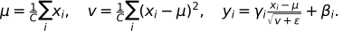

07. GPT Layer들 — 문맥을 섞고 특징을 가공하는 블록
GPT 블록은 Attention으로 위치 사이의 정보를 섞고, FFN으로 각 위치의 특징을 가공한다. 정규화와 잔차 연결은 이 연산을 깊게 쌓을 때 학습을 돕는다. 이름을 외우기보다 어떤 값이 보존되고 어떤 값이 바뀌는지 추적하자.
필요한 배경은 토큰별 벡터와 행렬곱, causal Attention이다. Attention이 낯설면 05장 Attention 설명으로 돌아간다. 이 장을 마치면 정규화의 축을 계산하고, 두 잔차 경로의 입력을 구별하며, 기본 FFN과 게이트 FFN을 비교할 수 있어야 한다. 기본 학습은 1~4절, 다른 분야 응용은 보충이다.
시각적으로 확인할 핵심
순서: X → 첫 분기 → U → 둘째 분기 → Y. 두 덧셈의 기준을 찾으세요.
![두 잔차는 서로 다른 입력을 보존한다: X · [B,T,C] 첫 잔차의 기준; Norm → Attention 위치 사이 정보를 섞음; U = X + Attention 결과 두 번째 잔차의 기준; Norm → FFN 위치별 특징 가공; Y = U + FFN 결과 폭 C를 보존](../assets/07_%ED%95%B5%EC%8B%AC%EA%B4%80%EA%B3%84.svg)
두 번째 잔차가 보존하는 값은 X가 아니라 U다. 모든 단계의 외부 폭은 C다.
1. 두 번 더하는 이유
설명용 Pre-Norm 블록은 다음처럼 계산한다. X는 [B,T,C], B는 문장 수, T는 위치 수, C는 토큰 표현의 폭이다.
U = X + Dropout(Attention(LayerNorm1(X)))
Y = U + Dropout(FFN(LayerNorm2(U)))
Attention은 각 위치가 읽을 문맥 정보를 만들고, FFN은 그 정보를 특징별로 변환한다. 잔차 연결은 분기 입력을 출력에 그대로 더하는 경로다. FFN 앞 잔차는 이미 Attention 결과를 더한 U를 보존한다. 두 번째에도 X를 더하면 위 식과 다른 모델이 된다. 덧셈하려면 분기 출력의 폭도 C여야 한다. 변화량을 학습한다는 해석은 유용하지만 변화가 항상 작다는 수학적 보장은 없다.
2. LayerNorm: 한 토큰의 C개 특징을 정리한다
LayerNorm은 한 토큰 벡터 안에서 평균과 분산을 계산한다. 배치나 시간 위치를 함께 평균내지 않는다. 각 특징의 정규화 값에 학습 가능한 scale γ와 shift β를 적용한다.

설명용 입력 x=(1,3), γ=(1,1), β=(0,0), ε는 무시할 만큼 작다고 놓자. 평균은 2, 편차는 (-1,1), 분산은 (1+1)/2=1, 표준편차는 1이므로 출력은 약 (-1,1)이다. γ=(2,1), β=(0,3)이면 (-2,4)로 바뀐다. 따라서 최종 출력이 항상 평균 0, 분산 1인 것은 아니다. ε는 상수 벡터처럼 분산 0일 때도 나눗셈을 가능하게 한다. 교안 129쪽의 ‘분산을 나눔’은 분산에 ε를 더한 값의 제곱근으로 나눔으로 읽어야 한다. Layer Normalization 원논문
RMSNorm은 평균을 빼지 않고 sqrt(mean(x²)+ε)로 나눈 뒤 scale을 곱한다. 같은 (1,3)의 RMS는 √5≈2.236, scale=1 출력은 약 (0.447,1.342)이다. 평균 0을 강제하지 않는다. BatchNorm은 배치 등의 축에서 통계를 얻으므로 ‘정규화’라는 공통 이름만으로 서로 교체해서 설명할 수 없다. RMSNorm 원논문
3. FFN과 활성화: 선형층 사이에서 무엇이 달라지나
기본 FFN은 각 위치에 같은 가중치를 적용한다. C → 4C → C에서 내부 폭을 늘리고 GELU 같은 비선형 함수를 통과시킨다. 위치마다 별도로 계산하므로 FFN 자체가 다른 위치의 값을 직접 읽지는 않는다. 비선형 함수가 없으면 두 선형변환은 하나의 선형변환으로 합칠 수 있어 표현에 제약이 생긴다.
| 함수 | 계산·특징 | 주의점 |
|---|---|---|
| Sigmoid | 1/(1+exp(-x)), 출력 0~1 |
큰 절댓값에서 기울기가 작아질 수 있음 |
| ReLU | max(0,x) |
음수 구간 기울기 0, 일부 뉴런이 계속 비활성화될 수 있음 |
| GELU | x Φ(x), Φ는 표준정규 누적분포 |
음수를 전부 0으로 만들지는 않음 |
| Swish/SiLU | β=1이면 x sigmoid(x) |
자기 값으로 통과량을 조절하는 부드러운 함수 |
GLU는 입력으로부터 값 경로 v와 게이트 경로 g를 별도로 투영하고 sigmoid(g) ⊙ v를 계산한다. ⊙는 같은 위치 원소끼리의 곱이다. 예를 들어 g=(0,0), v=(2,-4)이면 게이트=(0.5,0.5), 결과=(1,-2)다. SwiGLU는 게이트 함수를 SiLU로 바꾼다. 출력 투영을 포함하면 down(SiLU(g) ⊙ v)이며 마지막 폭은 다시 C다. SiLU 게이트는 sigmoid 자체와 달리 값이 0~1에 갇히지 않는다. FFN 확장 폭과 게이트 채택 여부는 모델 설계에 따라 다르다.
4. Dropout은 학습과 평가에서 다르다
Dropout은 학습 중 일부 활성값을 확률 p로 0으로 만든다. inverted dropout에서는 살아남은 값에 1/(1-p)를 곱해 기댓값을 맞춘다. 입력 (2,4), p=0.5에서 첫 값만 살아남은 한 사례는 (4,0)이다. 평가 때는 보통 항등연산이다. Attention 확률 뒤에 적용할 수도 있지만 그 위치로만 제한되지 않는다. 확률 뒤 Dropout을 통과한 한 번의 표본은 행합 1을 보장하지 않는다. 사용 여부와 비율은 학습 조건에 따른 선택이므로 교안 127쪽의 사용 빈도를 모든 LLM의 규칙으로 확대하지 않는다.
5. 보충: Transformer가 다른 분야로 넘어갈 때
| 예 | 토큰 또는 표현 | 이 교안에서 볼 공통점 |
|---|---|---|
| ViT | 이미지 패치 | 패치 사이 관계를 Attention으로 처리 |
| Whisper | 음성 표현과 텍스트 | Encoder가 음성을 읽고 Decoder가 텍스트 생성 |
| AlphaFold | 단백질 관련 표현 | 잔기 사이 관계를 모델링하는 구성요소 활용 |
| 시계열 | 연속값 패치 또는 이산 구간 | 시간적 관계를 표현하고 예측 |
모든 시계열 모델이 반드시 실수를 토큰 ID로 양자화하는 것은 아니다. ‘관계를 학습한다’는 공통 원리와 실제 입력·목표·구조의 차이를 함께 보자.
6. 이해 확인
[2,5,12]에서 일반적인 LayerNorm은 어느 축으로 평균을 내는가?- 두 번째 잔차에 X를 더하면 왜 기본 식과 다른가?
- C=12일 때 기본 FFN의 중간 폭과 최종 폭은? 게이트가 0.5, 값이 -6이면 GLU 결과는?
- x=(4,4)를 LayerNorm에 넣으면 ε가 왜 필요한가? 평가 시 Dropout의 출력은?
해설과 돌아갈 위치
- 마지막 12개 특징 축이다. 문장·위치는 각각 독립적으로 정규화한다. 2절로 돌아간다.
- U에는 Attention 수정분이 이미 포함되어 있다. X를 쓰면 그 상태의 보존 경로가 달라진다. 1절의 두 식을 다시 쓴다.
- 48과 12,
0.5×(-6)=-3. 3절의 경로를 확인한다. - 분산 0으로 나누는 것을 막는다. scale/shift 전 정규화 값은 0이다. 평가 Dropout은 입력을 그대로 돌려준다. 2·4절로 돌아간다.
다음 08장에서는 이 블록을 거친 벡터가 어휘 점수로 변하는 마지막 단계를 연결한다.